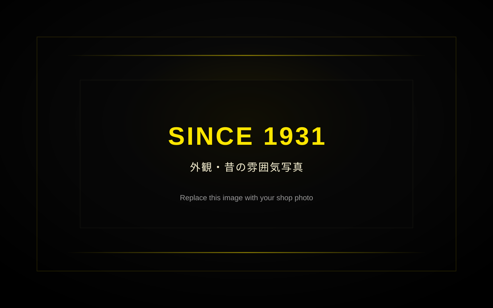
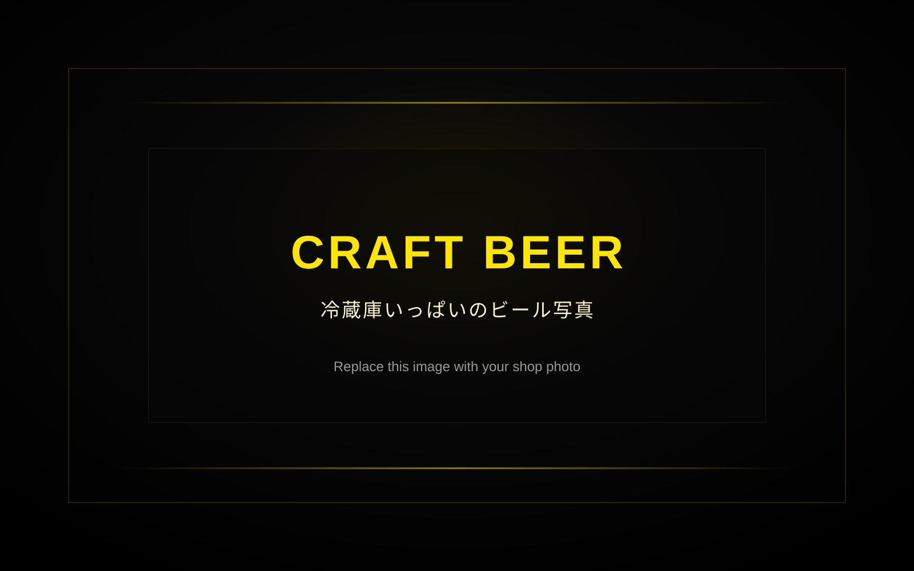
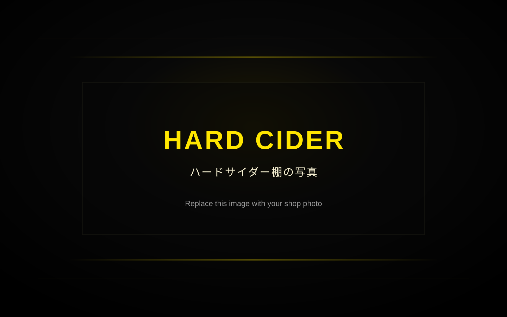
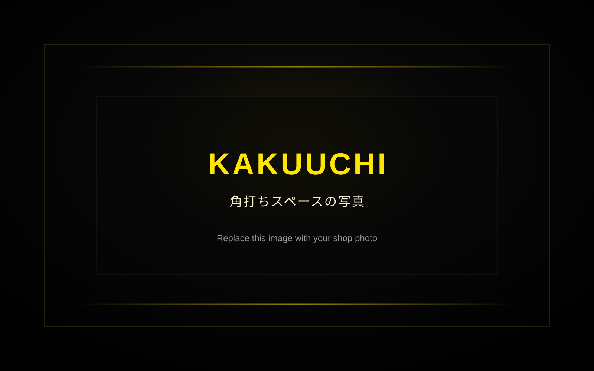

1931年から続くこと。Since 1931.
三代続く下北沢の酒屋が、時代とともに姿を変えながら、今はクラフトビールとハードサイダーの専門店へ。A third-generation liquor shop in Shimokitazawa, now specializing in craft beer and hard cider.
1931年創業
クラフトビール＆ハードサイダー専門店Since 1931
Craft Beer & Hard Cider Specialty Shop
お知らせNEWS
お知らせを読み込んでいます。
最新の入荷情報・臨時休業・イベントはInstagramでも更新しています。
最新情報LATEST ON INSTAGRAM
新入荷、イベント、日々のお知らせはInstagramで更新しています。New arrivals, events and everyday updates are posted on Instagram.
@kitazawakonishi
ホームページは北沢小西の雰囲気を、Instagramは今日のキタコニをお届けします。新入荷やイベントはInstagramをご覧ください。This website shows the spirit of Kitazawa Konishi. Instagram shows what is happening today.
Instagramを見るView Instagram最新の入荷情報・イベント・営業案内はInstagramで更新しています。New arrivals, events and shop updates are posted on Instagram.
自動表示サービスを導入する場合は、この場所に最新投稿を表示できます。A live Instagram feed can be added here later.
1931年創業SINCE 1931
関西から江戸へ酒を運んだ「下り酒屋」小西酒店の流れをくむ北沢小西は、1931年に下北沢で創業しました。Kitazawa Konishi traces its roots to Konishi Saketen, a historic sake merchant that transported sake from the Kansai region to Edo. The shop was established in Shimokitazawa in 1931.
時代とともにコンビニエンスストアやワインショップへと姿を変え、2013年からは三代目店主のもと、クラフトビールとハードサイダーの専門店として、日本とアメリカを中心に豊かな酒文化を伝え続けています。Over the years, it evolved into a convenience store and later a wine shop. Since 2013, under the leadership of its third-generation owner, it has specialized in craft beer and hard cider.
現在は、国内外200種類以上のクラフトビールとハードサイダーを取り扱う専門店として、新しい酒文化の魅力を下北沢から発信しています。Today, we offer more than 200 carefully selected craft beers and hard ciders from Japan and around the world, sharing modern beer and cider culture from Shimokitazawa.
出会いDISCOVER
北沢小西で過ごす時間を、少しだけ。A short look at what you can enjoy at Kitazawa Konishi.

三代続く下北沢の酒屋が、時代とともに姿を変えながら、今はクラフトビールとハードサイダーの専門店へ。A third-generation liquor shop in Shimokitazawa, now specializing in craft beer and hard cider.

国内外200種類以上のクラフトビールから、IPA、Hazy IPA、Lager、Stout、Sourまで。気分に合う一本を探せます。Choose from more than 200 craft beers from Japan and abroad, from IPA and Hazy IPA to Lager, Stout and Sour styles.

りんごを発酵させて造るハードサイダーも豊富に取り扱っています。自然派ワインが好きな方にもおすすめです。We also carry a wide range of hard ciders made from fermented apples, a great choice for fans of natural wine and fruit-forward drinks.

購入したビールやサイダーを、その場で楽しめます。下北沢散策の途中に、ひとりでも気軽にどうぞ。Buy a beer or cider and enjoy it right inside the shop. Solo visitors are welcome.
DRINK HERE
買ったお酒を店内で楽しめます。開栓料は1缶110円、プラカップは30円。全日16:00までは開栓料無料です。“Kakuuchi” means drinking what you buy inside a liquor shop. Opening fee is ¥110 per can, and plastic cup is ¥30. Opening fee is free until 4:00 pm every day.
火曜定休／月1回不定休あり。詳しくはSNSをご確認ください。Closed on Tuesdays. We may also close once a month; please check social media for details.
においの強くないおつまみは持ち込み可能です。現在、イカと餃子は持ち込み禁止です。Snacks are allowed as long as they are not strong-smelling. Squid and gyoza are currently not allowed.
SHIMOKITAZAWA
下北沢の街を歩いた先にある、クラフトビールとハードサイダーの小さな専門店です。A small craft beer and hard cider specialty shop in Shimokitazawa.
有限会社北沢小西Kitazawa Konishi Co., Ltd.
〒155-0032 東京都世田谷区代沢5-28-165-28-16 Daizawa, Setagaya-ku, Tokyo 155-0032
TEL 03-3421-0932TEL +81-3-3421-0932
Google Mapsで開きますOpens in Google Maps
FAQ
予約は不要です。席数が限られるため、混雑時はお待ちいただく場合があります。No reservation is needed. Seating is limited, so you may need to wait when busy.
はい。購入した商品を開栓料で店内で楽しめます。Yes. You can drink what you buy inside the shop with a small opening fee.
簡単な英語、指差し、スマホ翻訳で対応できます。海外のお客様も歓迎です。Basic English, pointing and phone translation are welcome. International visitors are very welcome.
発送はご来店いただいた方のみ承ります。電話やメールでの発送注文はできません。Shipping is available only for customers who have visited the shop. We cannot accept shipping orders by phone or email.